DAG1
Somerset West → Cederberg
Om 09:00 uur verzamelen we bij Villa Helderberg, met koffie en verse croissants van Weirdough. De 4x4’s worden bezorgd, je krijgt uitleg over de uitrusting en dan rijden we naar de rotsachtige Cederberg.
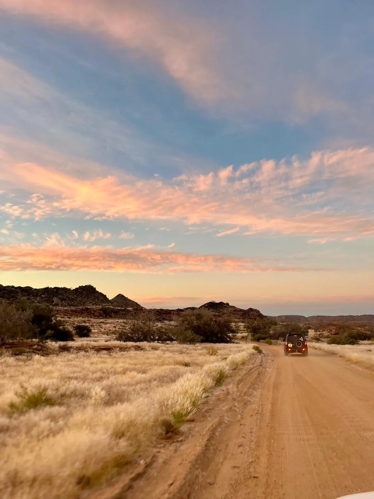
S 26°28′ · E 20°37′ Kgalagadi Transfrontier Park
15 dagen zelf rijden door de rode Kalahari: in je eigen 4x4 met daktent, met maximaal 10 reizigers en een begeleider die de route door en door kent.
Waarom Kgalagadi
Kgalagadi is een Setswana woord, vaak vertaald als ‘de grote dorst’. Het park is ongeveer zo groot als Nederland en bijna leeg: rode duinen, droge rivierbeddingen en een hemel die nooit ophoudt.
Je kampeert op de mooiste, meest afgelegen plekken, rijdt zelf door het landschap en komt elke avond thuis bij het vuur.
Kgalagadi zeg maar gewoon met je Hollandse g
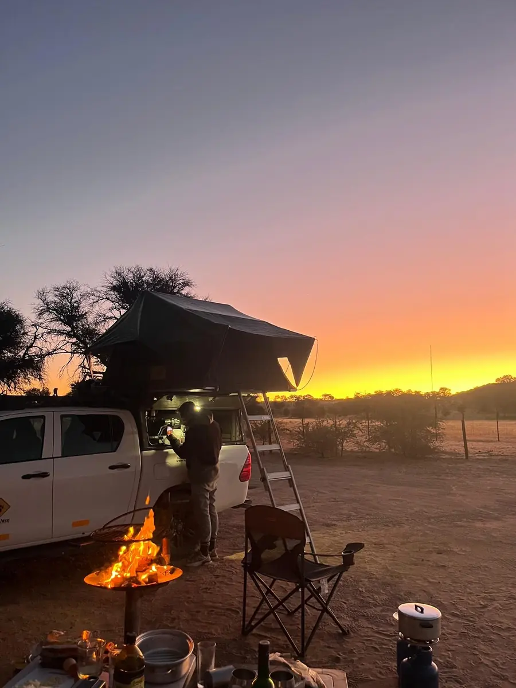
Elke avond gaat het vuur aan. Vlees op het rooster, verhalen over de dag en daarboven een sterrenhemel zonder één straatlantaarn.
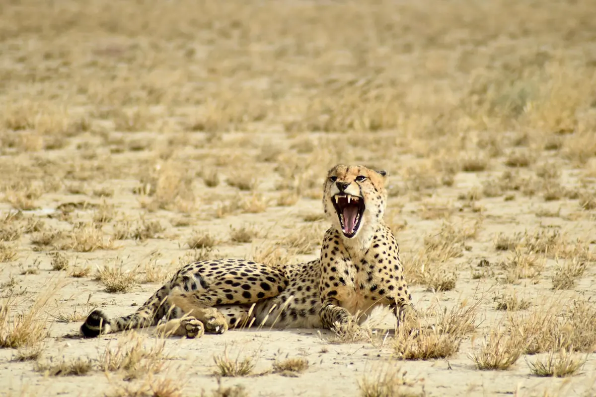
De Kgalagadi is wereldberoemd om zijn roofdieren: Kalahari-leeuwen met zwarte manen, luipaarden, cheeta’s en hyena’s, tussen kuddes spiesbokken en springbokken.
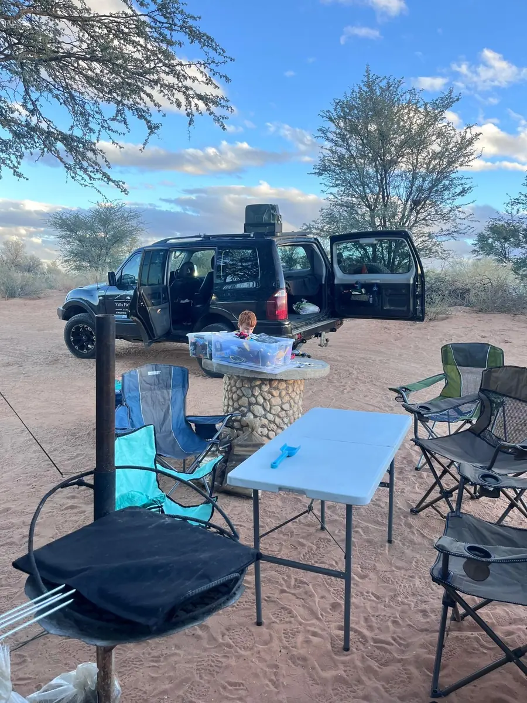
Jullie eigen 4x4 met daktent: de vrijheid en privacy van een eigen auto, met de gezelligheid en zekerheid van een kleine groep en een deskundige begeleider.
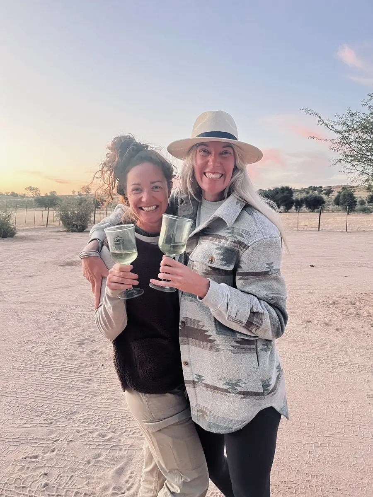
Tussen het kamperen door: een luxe resort in Upington en een sfeervol guesthouse in Montagu, met wijnproeverij en een feestelijk afscheidsdiner.
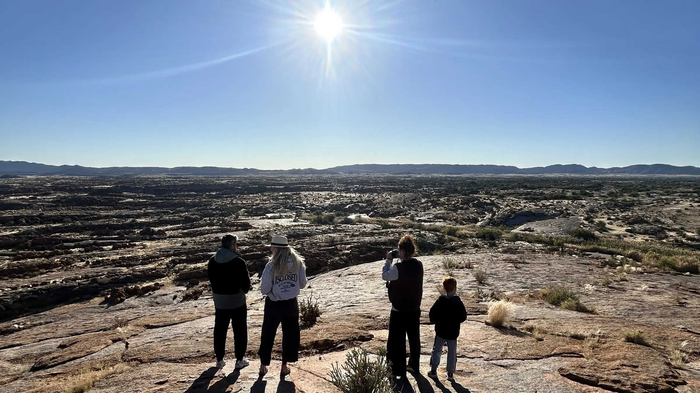
Geen bus. Geen haast. Alleen ruimte.
Dieren spotten
Leeuwen, cheeta’s, giraffen en kuddes antilopen: in de Kgalagadi zie je ze in het open landschap, vaak vanuit je eigen auto.
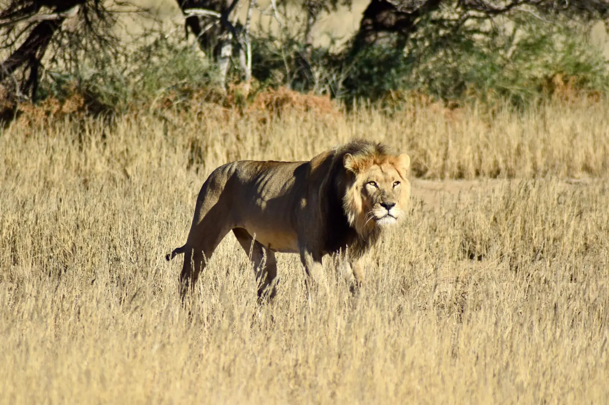
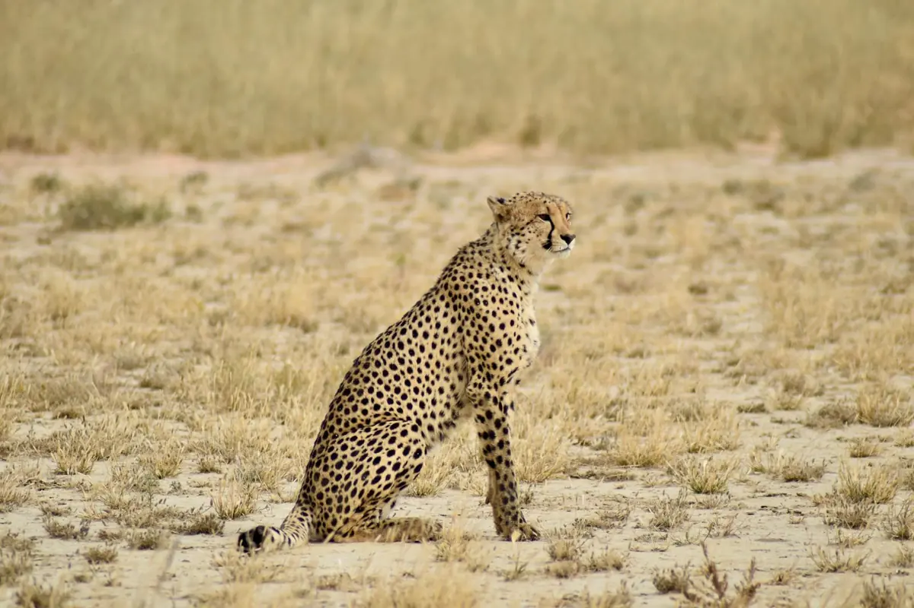
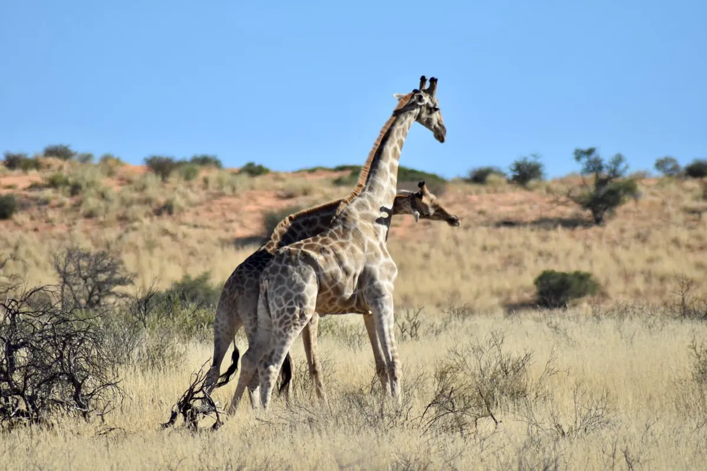
Het dagritme
Op safari bepaalt de zon je agenda. Zo ziet een gewone dag in het park eruit.
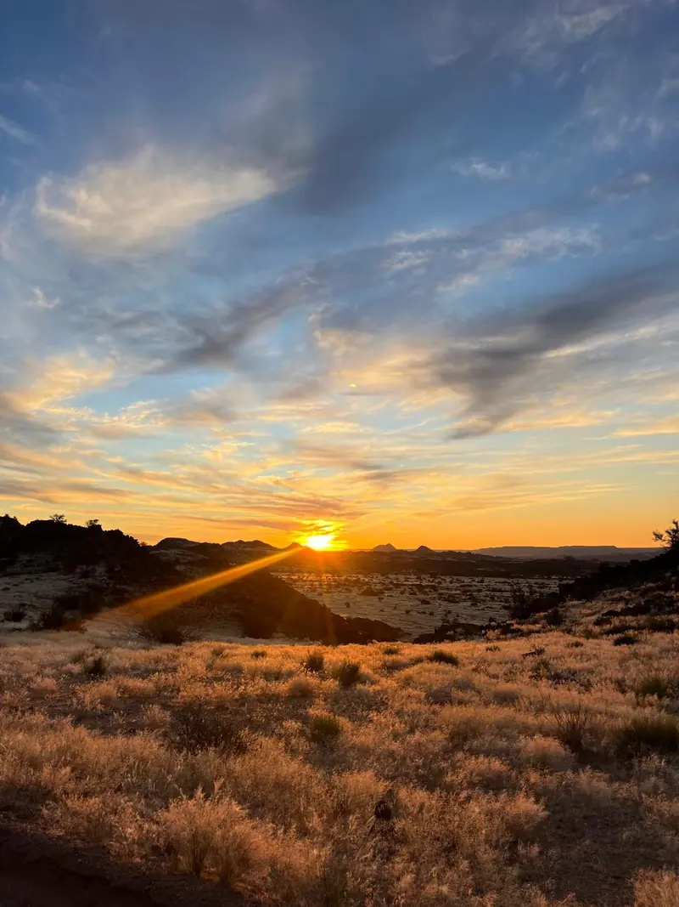
Koffie op het vuur terwijl de duinen kleuren. Zodra het licht is rijden we het park in.
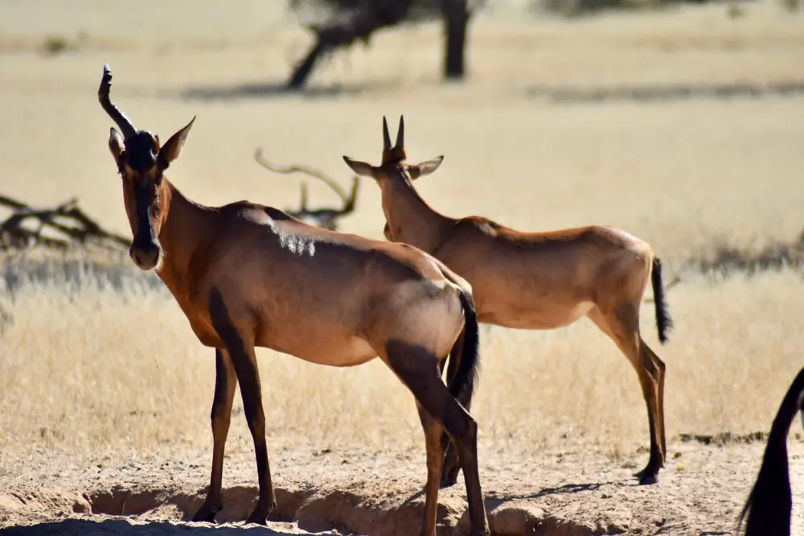
Langs de droge rivierbeddingen van de Auob en de Nossob, waar roofdieren en grazers zich verzamelen. Camera klaar.
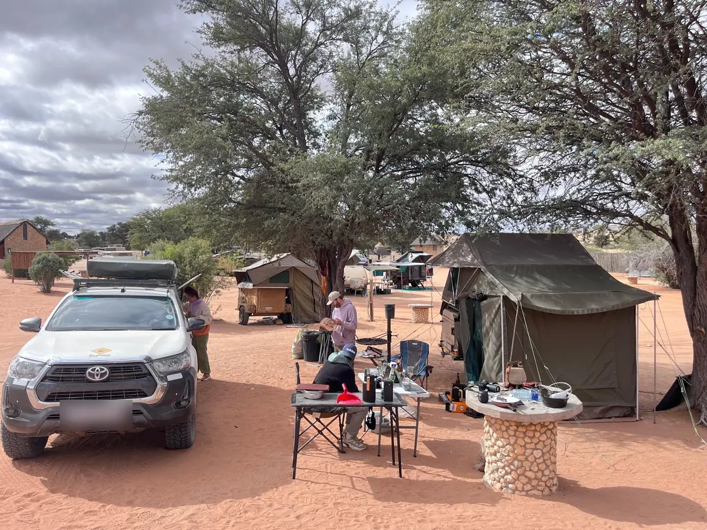
Het is heet. Schaduw, een boek, een dutje. Precies wat de leeuwen doen.
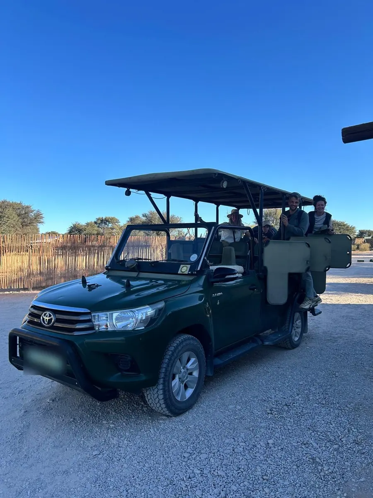
Het mooiste licht voor foto’s. Bij zonsondergang gaan de poorten dicht, dus dan zitten wij al bij het vuur.
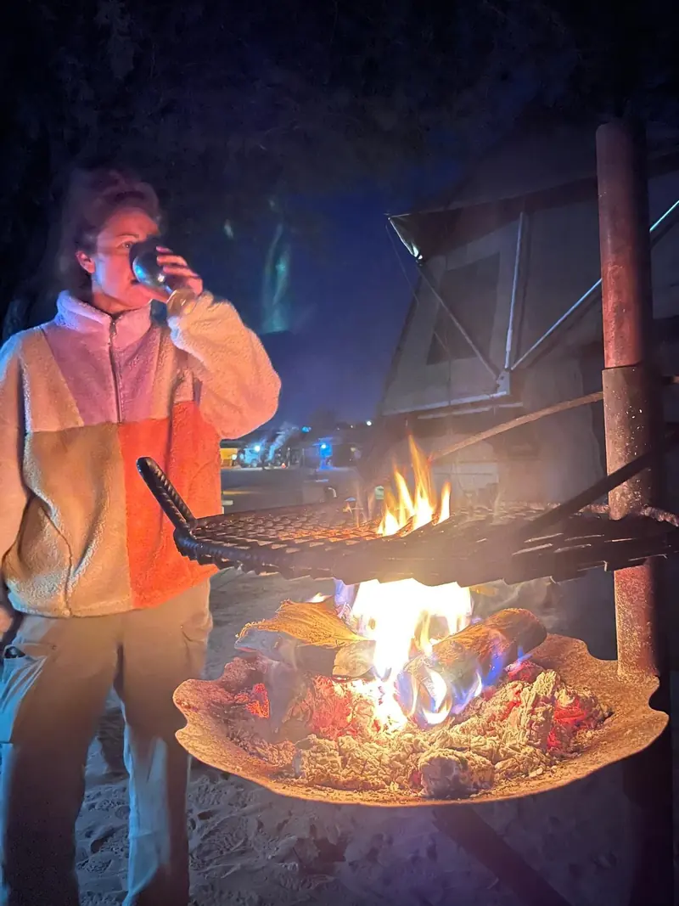
Braai, verhalen en dan omhoog kijken: de Melkweg, het Zuiderkruis en nauwelijks een lamp in de wijde omtrek.
De route
Van de rotsen van de Cederberg langs de Oranjerivier naar de rode duinen van de Kgalagadi. Daarna via de Karoo en de wijngaarden van Montagu terug naar Somerset West. Tik op een dag en zie waar je bent.
Schematische kaart, niet op schaal
Om 09:00 uur verzamelen we bij Villa Helderberg, met koffie en verse croissants van Weirdough. De 4x4’s worden bezorgd, je krijgt uitleg over de uitrusting en dan rijden we naar de rotsachtige Cederberg.
Noordwaarts door het uitgestrekte Namaqualand, in het bloeiseizoen een zee van wilde bloemen. In Springbok slaan we de tenten op.
We volgen de weg naar de machtige Oranjerivier en kamperen bij het Augrabies Falls National Park.
Wandelen langs de immense kloof, kijken naar het bulderende water en niets hoeven. De auto blijft vandaag staan.
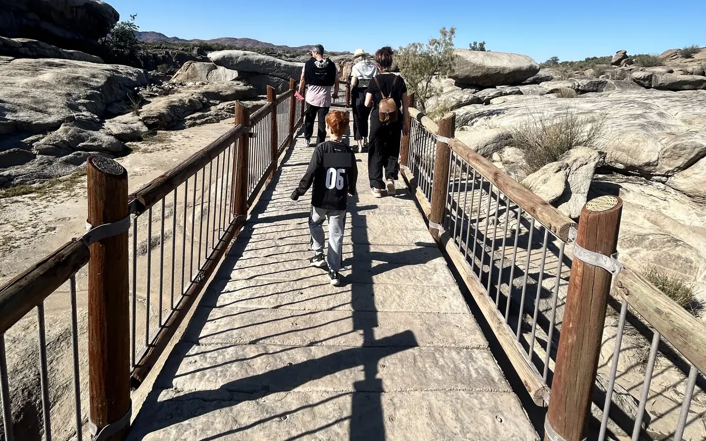
Nu begint het echte werk: we rijden de Kgalagadi in. Twee Rivieren ligt waar de droge bedding van de Auob en de Nossob samenkomen.
Langs de Auob naar Mata Mata, aan de grens met Namibië. Speur de rivierbedding en de rode duinen af naar leeuwen, cheeta’s en antilopen.
Een hele dag rond het kamp: het vroege licht, de stilte en het geduld dat elke goede safari beloont.
Verder de wildernis in, naar het afgelegen kamp Nossob.
Nog een dag in het hart van het park. Braai, sterrenkijken en luisteren naar de geluiden van de bush.
De laatste kilometers door de Nossob-rivierbedding, en een laatste avond bij het kampvuur in de Kalahari.
We verlaten de woestijn voor een comfortabel resort: zwembad, warme douche, een echt bed en een gezellig diner in een lokaal restaurant.
Een lange maar prachtige rijdag door het weidse hart van Zuid-Afrika, tot aan de dramatische bergen van het Karoo National Park.
Een tweede nacht in de serene rust van het park, omringd door bergen. Tijd om te wandelen, te lezen en na te genieten.
We ruilen de tent voor een heerlijk bed in het charmante Montagu. Exclusieve wijnproeverij en een feestelijk afscheidsdiner sluiten de reis af.
Na het ontbijt rijden we terug naar Villa Helderberg. Iedereen gaat op eigen gelegenheid naar huis, of boekt nog een paar nachten bij in de villa.
De groep
Je reist met maximaal vijf stellen, elk in een eigen 4x4. Klein genoeg voor rust, ruimte en privacy. Groot genoeg voor de gezelligheid rond het kampvuur en het gevoel dat je het samen doet.
Je hoeft niets zelf uit te zoeken: de route, de kampen en de planning liggen vast. Jij hoeft alleen te rijden, te kijken en te genieten.
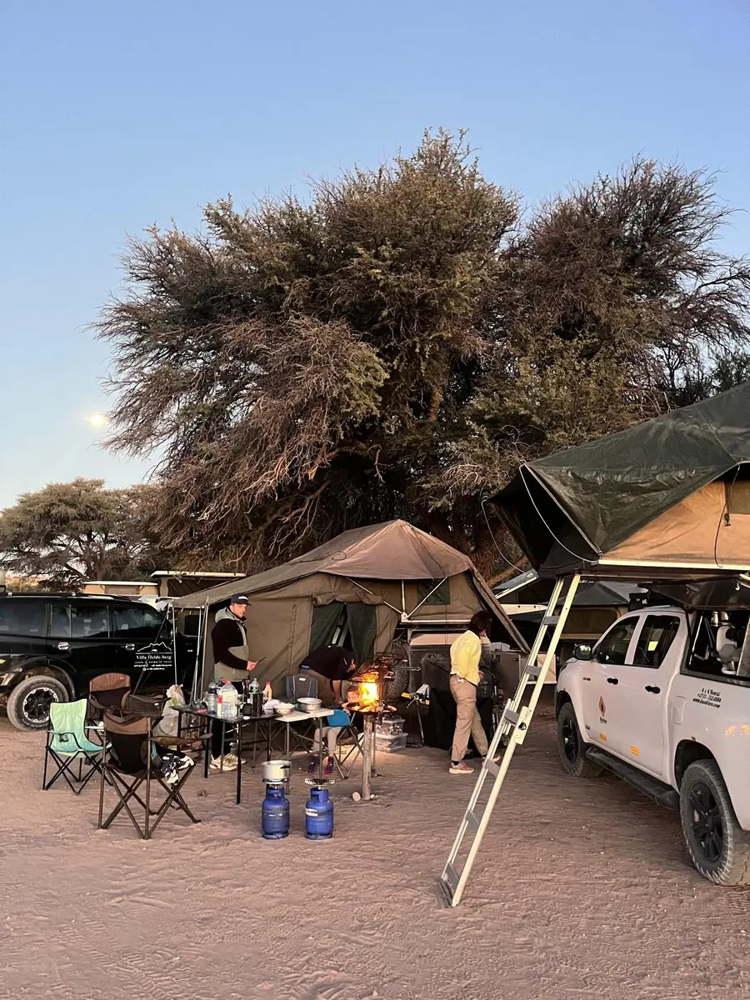
Dag 1, 09:00 uur
We beginnen bij Villa Helderberg in Somerset West met koffie en verse croissants van Weirdough. Daarna krijg je de sleutels van je 4x4 en een uitgebreide uitleg over de uitrusting.
En je krijgt een cadeau mee: je eigen bedrukte kampeerbeker. Voor elke ochtendkoffie bij het vuur, en straks thuis voor de herinnering.
Prijs
€4.500
per persoon, op basis van een gedeelde 4x4 en gedeelde accommodatie (sharing). Je boekt per stel.
Plek reserverenDe reis gaat definitief door bij minimaal 6 aanmeldingen. Zelf regelen: je vlucht naar Kaapstad.
Vragen
Staat je vraag er niet bij? Stuur ons een berichtje via het formulier hieronder.
Je rijdt zelf, maar je staat er nooit alleen voor. Op dag 1 krijg je een uitgebreide briefing over de auto en de uitrusting, en onderweg heb je een begeleider die de route door en door kent.
Twee reizigers delen één 4x4 met daktent en dezelfde accommodatie. De prijs van maximaal € 4.500 geldt per persoon op basis van die deling. Reis je op een andere manier? Stuur ons een bericht, dan kijken we wat mogelijk is.
De reis gaat definitief door bij minimaal 6 aanmeldingen (3 stellen) en er gaan maximaal 10 reizigers mee (5 stellen). Zo blijft de groep klein en de sfeer goed.
De Kgalagadi is wereldberoemd om zijn roofdieren, maar het blijft wildernis en we kunnen niets beloven. Wat we wel doen: dagen in het park, kampen midden in het gebied en genoeg tijd om geduldig te kijken. Dat vergroot je kansen enorm.
Bij Villa Helderberg in Somerset West, vlak bij Kaapstad. Na dag 15 ga je op eigen gelegenheid naar huis. Wil je nog wat blijven? Dan kun je extra nachten bijboeken bij Villa Helderberg.
Veel. De rotsformaties van de Cederberg, het bloemenrijke Namaqualand, de Augrabies-watervallen in de Oranjerivier, het weidse Karoo National Park en de wijngaarden van Montagu.
Meedoen
Er gaan maximaal vijf stellen mee. Laat je gegevens achter en we nemen contact met je op met de reisdata en alle praktische informatie.